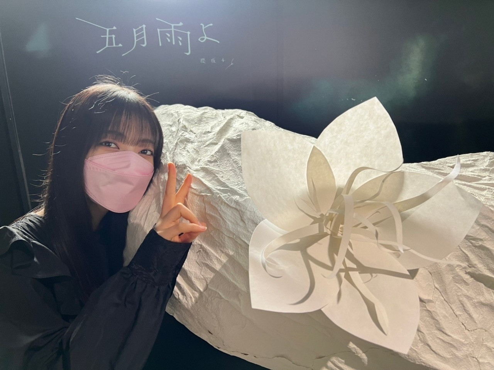
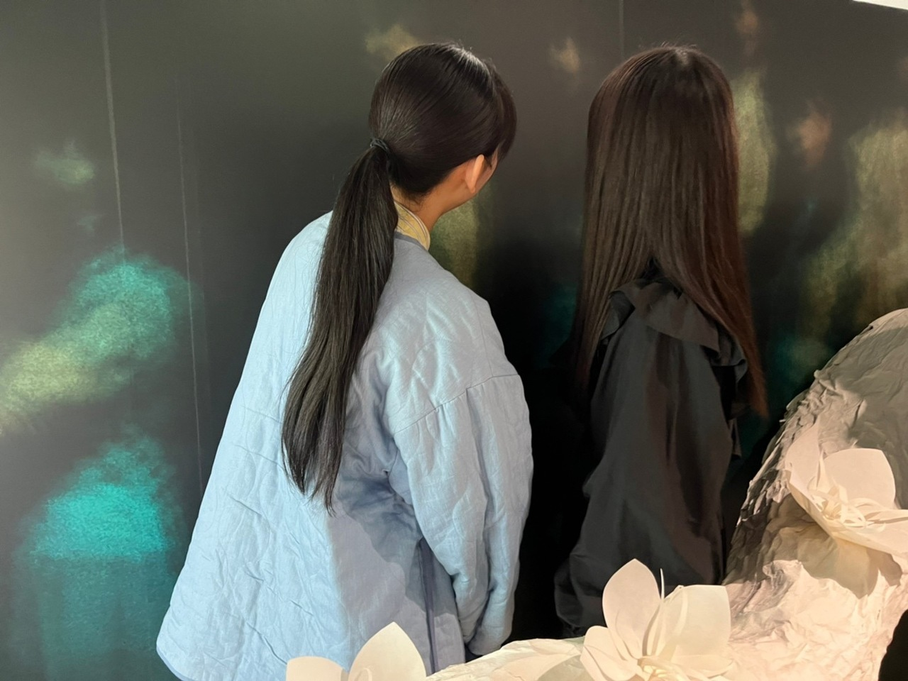
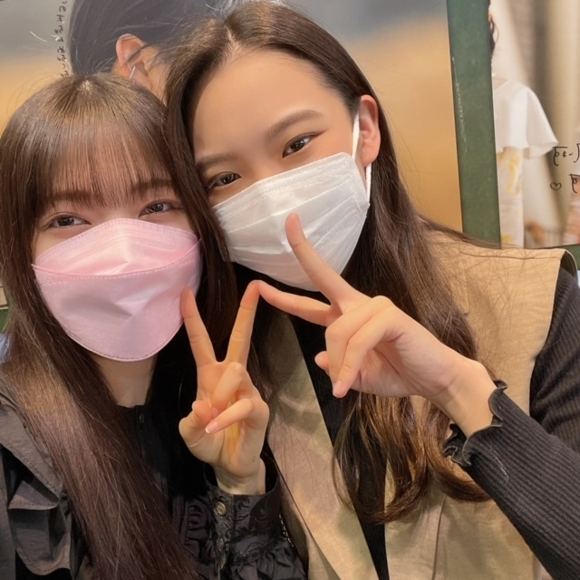
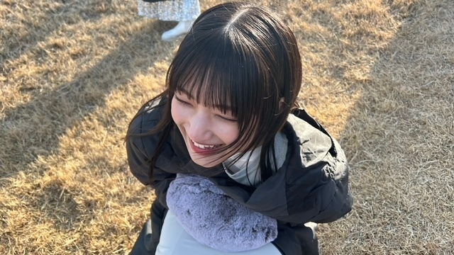
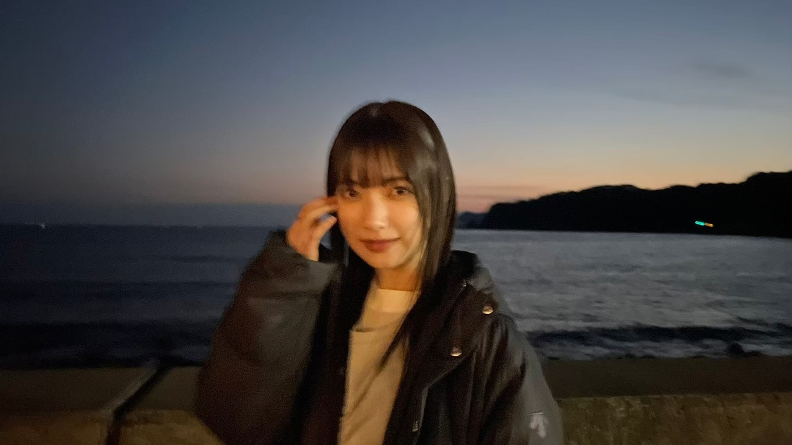
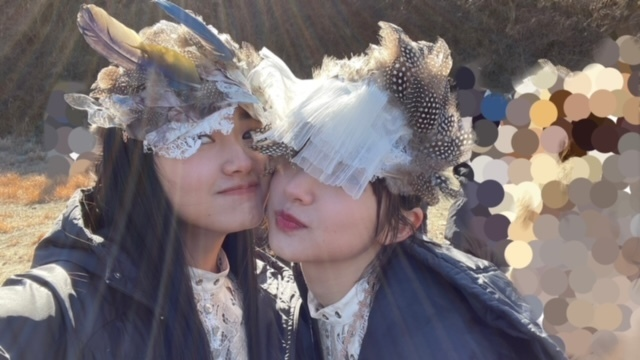
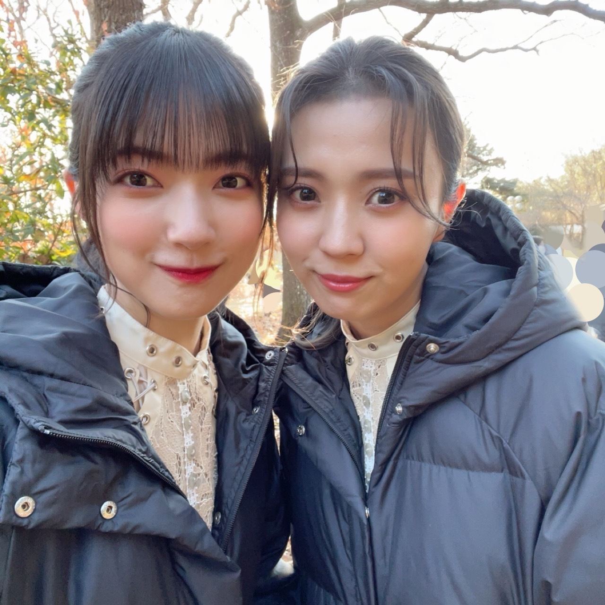
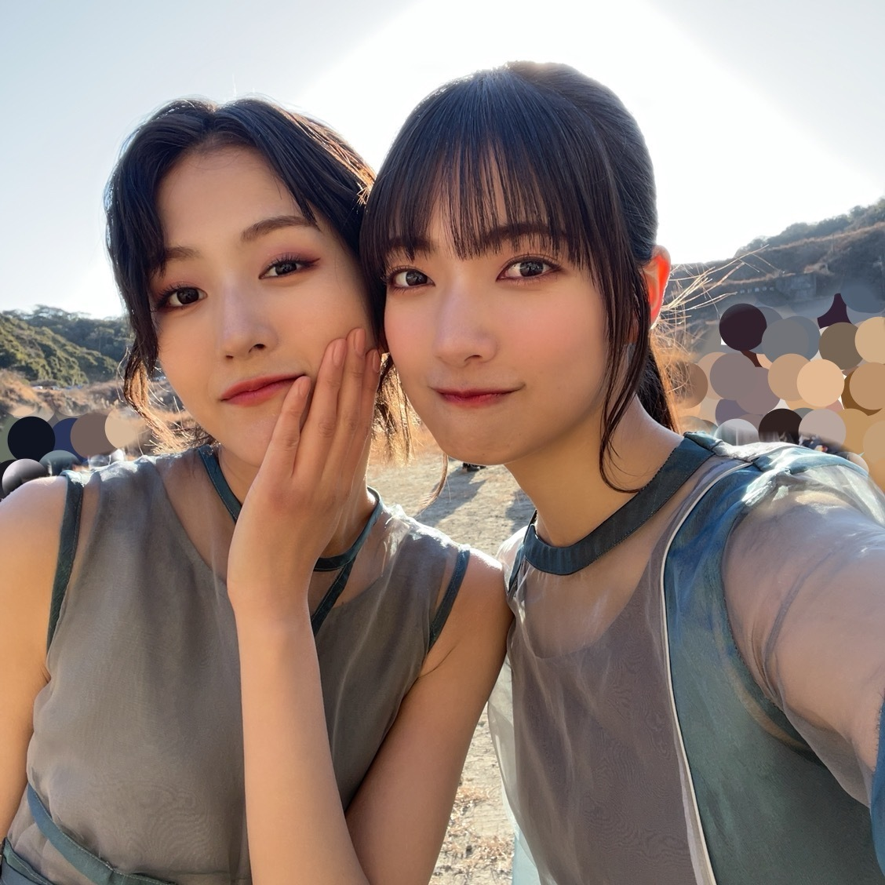
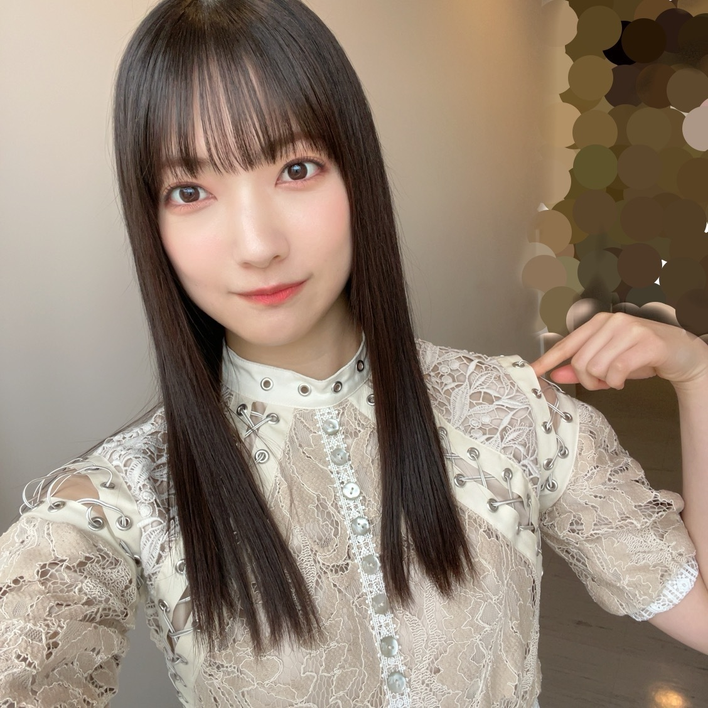
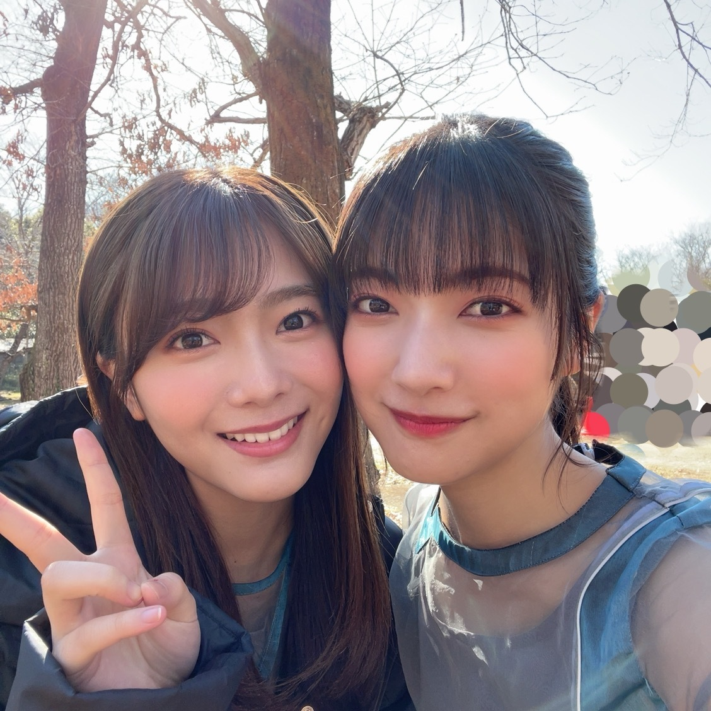

後から後から
繋がって重なって、
後付けの要素が集まったときに
改めてその全体を振り返ってみると、
今まで積み上げてきたものが"偶然"という
一つの固まりになっていて、、
偶然だな、奇跡だなという感情は
起きている最中よりも
後から後から込み上げるものだと！

今日4月6日に実感しました
櫻坂46 4thシングル「五月雨よ」リリース日であり、
一期生さんデビュー6周年の記念日です✨
おめでとうございます*
始まりの地があった場所
現・東急渋谷ストリームさんに、
アートワークと同じ桜の木をOSRINさん・ペリメトロンチームのみなさんが手がけてくださいました

現在、東急渋谷ストリームから、渋谷・桜が丘に繋がる道の開通工事を行なっているそうで、、
いつか、その完成した道も歩いてみたいな〜と思いました
アートワークの世界観を、
みなさんにもぜひ楽しんでいただきたいです

SHIBUYA TSUTAYAさん
愛のある素敵な展示をありがとうございます
いろんなところにメッセージを書かせていただきました✴︎
ぜひ見つけてください！
その他にも、さまざまな場所で「五月雨よ」を展開してくださっています
ありがとうございます！
みなさん、いろんな場所でたくさん見つけて、楽しんでいただけたらな〜と思います☔️





「五月雨よ」、「僕のジレンマ」でのオフショットです〜〜
公式YouTubeでのコメントもひとつひとつ読んでいます*
ありがとうございます
新しい世界観でのアートワーク、ジャケ写撮影
振り入れ、MV撮影、、など、、
新しいものを創って、みなさんにお届けするまでの制作期間が大好きです
私たちがやっていることは全て、
受け取ってくださるみなさんが居てくださって初めて
成り立ちます
いつも本当にありがとうございます🌸
支えてくださる、関わってくださる
全ての方々に感謝して毎日を過ごします！
もうまもなく、4thシングルのミーグリも始まります
応募してくださったみなさんありがとうございます！
早く会いたいです*

🤍今夜、4月6日（水）22:20〜(野球延長のため)
「レコメン！」さんに
ほのちゃんと出演させていただきます🧸
ぜひお聞きください〜＊

大園玲